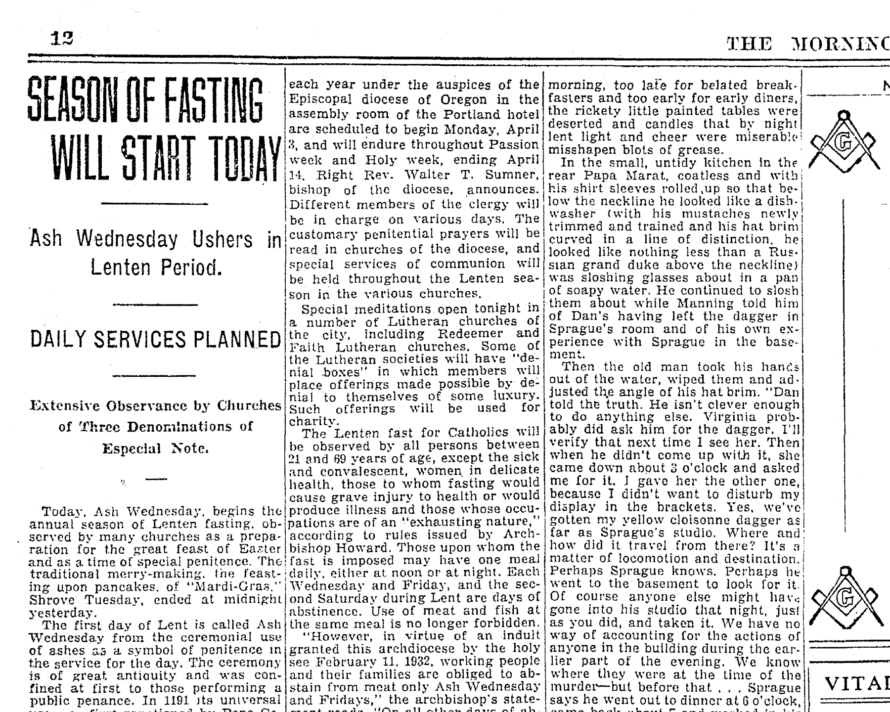
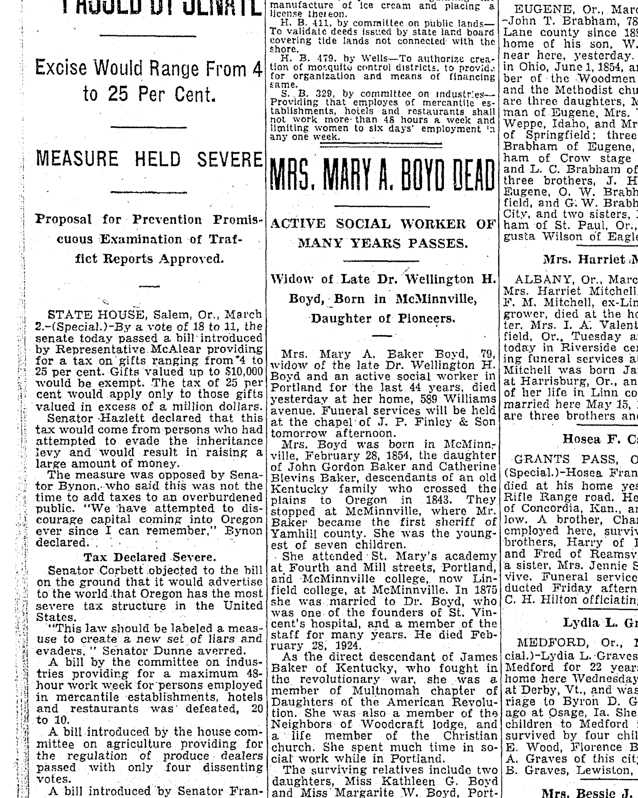

Winter Scott Alderson 1866–1933
Peter's great-grandfather by adoption.
Winter Scott Alderson was born on 1 Dec 1866 in Springwater, Oregon, United States (according to an online family tree)1, the son of Christopher Alderson and Mary Catharine Royal7. He married Carrie May Newman on 4 Sep 1892 in Gilliam County, Oregon, United States (according to an online family tree)1. He died on 27 Feb 1933 in Portland, Multnomah County, Oregon, United States1,4,5 and was buried at Lincoln Memorial Park, Portland, Multnomah County, Oregon, United States (according to an online family tree)1.
Family
- Parents
- Christopher Alderson 1827–1907 and Mary Catharine Royal 1842–1928 tradition
- Wife
- Carrie May Newman 1878–1970 · married on 4 Sep 1892 in Gilliam County, Oregon, United States
- Children
- Estella May Alderson 1916–2008 adoptive
- Lola Lucille Alderson 1893–1984 documented
Life events
| Event | Date | Place and details |
|---|---|---|
| Born | 1 Dec 1866 | Springwater, Oregon, United States According to an online family tree1 |
| Lived | 1870 | Jackson County, Oregon, United States According to an online family tree1 |
| Lived | 1880 | Sheridan, Oregon, United States According to an online family tree1 |
| Lived | 19 Jun 1893 | Umatilla County, Oregon, United States2 |
| Lived | 22 Oct 1895 | Portland, Multnomah County, Oregon, United States3 |
| Lived | 1910 | Milwaukie, Clackamas County, Oregon, United States According to an online family tree1 |
| Lived | 1916 | Portland, Multnomah County, Oregon, United States According to an online family tree1 |
| Lived | 1920 | Portland, Multnomah County, Oregon, United States According to an online family tree1 |
| Lived | 1921 | Portland, Multnomah County, Oregon, United States According to an online family tree1 |
| Lived | 1930 | Portland, Multnomah County, Oregon, United States According to an online family tree1 |
| Died | 27 Feb 1933 | Portland, Multnomah County, Oregon, United States1,4,5 |
| Buried | Lincoln Memorial Park, Portland, Multnomah County, Oregon, United States According to an online family tree1 | |
| Note | No Oregon court adoption of Estella is published. The 'Changes of Names and Adoptions' lists printed in the Oregon Laws were read for 1914–1916 (1917 volume) and 1917–1918 (1919 volume). They contain no Alderson as adopter and no 'Phillis', 'Barns' or 'Estella' as a former name. By law, county…6 |
Records


Open questions
Sources
- FamilySearch Family Tree: Winter Scott Alderson (L51K-5YQ).
- Oregon birth records of Lola Lucille Alderson (Webster), 19 Jun 1893.
Lola Lucille Webster: Birth 19 Jun 1893 @ Umatilla, Umatilla, Oregon, United States; Father: Winter Scott Alderson; Mother: Carrie May Newman Alderson
Lived in eastern Oregon when his daughter Lola Lucille Alderson was born on 19 June 1893 (recorded as Umatilla County in HR3B-1P2M and Wheeler County in W7J8-HGN2).
- Birth and death records of Elmer Elsworth Alderson (b. 22 Oct 1895 Portland, OR).
Elmer Elsworth Alderson (ZNLQ-YFPZ): Birth 1895 @ Portland, Oregon; Death 12 Mar 1944 @ Portland, Washington, Oregon, United States; ParentChild: Winter Scott Alderson, Carrie May Newman Newman … Alderson (84KN-27MM): Birth 22 Oct 1895 @ Oregon, United States; ParentChild: Scott Alderson, Alderson
Lived in Portland, Multnomah County, Oregon when his son Elmer Elsworth Alderson was born there on 22 October 1895.
- Funeral Notice: Alderson — Winter Scott Alderson, Morning Oregonian (Portland, Oregon), 1 March 1933, p. 12; and Death List, Morning Oregonian, 3 March 1933, p. 12.
ALDER.SON—-F’eb. 27, late of 5003 5-Slh si. S. E., Winter Scott Alderson, beloved husband ol May Alderson. son of the late Rev, C. and Mary R. Alderson, father of Lola L. Helgerson, Elmer E. and Stella Alderson,' all or Portland; brother of Anna Pierson ami Marguerite Burkhart of Albany, Or.: Edith Alderson and Lois Huggins, both of Portland; five grandchildren also survive, F'rlends invited to attend funeral services Thursday. March 2. al 1:30 P. M. at the Chapel of the Mount Pcol.t Funeral Home. Foster road at 59lh st. Interment Lincoln Memorial Park,
Translation: ALDERSON—Feb. 27, late of 5003 58th st. S. E., Winter Scott Alderson, beloved husband of May Alderson, son of the late Rev. C. and Mary R. Alderson, father of Lola L. Helgerson, Elmer E. and Stella Alderson, all of Portland; brother of Anna Pierson and Marguerite Burkhart of Albany, Or.; Edith Alderson and Lois Huggins, both of Portland; five grandchildren also survive. Friends invited to attend funeral services Thursday, March 2, at 1:30 P. M. at the Chapel of the Mount Scott Funeral Home, Foster road at 59th st. Interment Lincoln Memorial Park.
Died 27 February 1933 at Multnomah County Hospital, Portland, Oregon, age 66, of cancer; late of 5003 58th St. S.E., Portland; beloved husband of May Alderson; son of the late Rev. C. and Mary R. Alderson; father of Lola L. Helgerson, Elmer E. Alderson, and Stella Alderson, all of Portland; brother of Anna Pierson and Marguerite Burkhart of Albany, OR, and Edith Alderson and Lois Huggins, both of Portland; survived by five grandchildren; funeral Thursday, 2 March 1933 at 1:30 p.m. at the Chapel of the Mount Scott Funeral Home (Foster Rd. at 59th St.), with interment at Lincoln Memorial Park.
- Death List: Alderson — Winter Scott Alderson, Morning Oregonian (Portland, Oregon), 3 March 1933, p. 12.
Alderson—Winter Scott Aldorson. Multnomah county hospital, February 27, 66 years. Cancer.
Translation: Alderson—Winter Scott Alderson, Multnomah county hospital, February 27, 66 years. Cancer.
Official Portland death list entry: died 27 February 1933 at Multnomah County Hospital, Portland, Oregon, age 66 years; cause of death: cancer.
- Changes of Names and Adoptions, 1917 vol. pp. 986–996 (seq 998–1008); 1919 vol. pp. 892–906 (seq 898–912).
No Oregon court adoption of Estella is published. The 'Changes of Names and Adoptions' lists printed in the Oregon Laws were read for 1914–1916 (1917 volume) and 1917–1918 (1919 volume). They contain no Alderson as adopter and no 'Phillis', 'Barns' or 'Estella' as a former name. By law, county judges reported every adoption to the Secretary of State for these lists through 1918.
- FamilySearch Family Tree: Winter Scott Alderson (L51K-5YQ), parents.